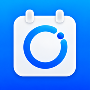

ND CountdownPrivacy Policy
Updated October 29, 2026 · Published by Next Dawn Technologies
ND Countdown is a local-first countdown and anniversary app. It requires no app account, does not sell personal data, and does not track you across apps. This notice describes the current native iOS version.
The Developer Does Not Collect Event Content
The app has no developer-operated backend receiving your records and includes no advertising or third-party analytics SDKs. Titles, dates, photos, notes, tags, categories, and preparation lists are not automatically sent to the developer.
Local Storage and Changing Devices
Primary records are encrypted on your device using AES-256-GCM. A random device key is stored in Keychain and does not migrate with device backups. The main database and widget display files are excluded from system backups. Enable iCloud sync and confirm it has finished before changing devices or uninstalling; system backups alone may not restore your records.
Optional iCloud Sync
iCloud sync is off by default. If enabled, events, categories, photos, and preparation lists sync through Apple CloudKit to devices using the same Apple Account. Content uses CloudKit encrypted fields, and photos are stored as attachments in your private database; Apple provides this service. Turning sync off lets you keep local records or remove synced local copies; unsynced content stays. Turning sync off does not automatically delete iCloud data.
System Permissions Are Used When Needed
The system photo picker reads only the items you choose. Contacts or calendar read access is requested when importing birthdays or calendar events; sources are not modified. Notification and alarm permissions are used separately for your configured local reminders and ringing alarms on iOS 26 and later. The system performs Face ID or device passcode authentication; the app does not receive biometric data. Manage permissions in system settings.
Widgets, Apple Watch, and Notifications
Widgets read a local display copy through App Group containing titles, dates, photos, and display settings, without notes, reminder configurations, or preparation lists. This copy uses system file protection rather than the main database encryption format. Watch receives display data such as titles and dates through WatchConnectivity, without photos, notes, reminders, or lists. App Lock does not automatically hide these surfaces. You can hide widget records, which also hides Watch content, and separately hide notification titles and content.
Purchases and Restoration
Apple App Store and StoreKit handle PRO purchases and restoration. The app reads verified transaction and entitlement information, including AppTransaction to determine existing-user access. The developer does not receive your card details or full payment information.
You Control Deletion and Sharing
You can delete individual records; deletions sync when iCloud sync is enabled. You can also delete all iCloud data in Me, which turns sync off and keeps local records. You choose recipients when sharing text or photo cards through the system share sheet; the recipient or selected service then applies its own data practices. The developer cannot remotely restore or read your local records or private iCloud database.
Website Language and Email Support
This website stores only your language preference in browser local storage under nd-countdown-language; clearing site data removes it. If you email support, we receive the email address, text, and attachments you choose to provide and use them to respond and address your request. Hosting and email providers may process connection or message information needed to provide their services. Do not send passwords or unnecessary sensitive information.
Policy Updates and Contact
If our data practices change, we will update this page and its date. For privacy questions, contact: nextdawntechnologies@gmail.com
Publisher
Next Dawn Technologies
nextdawntechnologies@gmail.com
ND Countdown 是一款本地优先的倒计时与纪念日应用。无需注册应用账号，不出售个人数据，不进行跨应用追踪。以下说明对应当前原生 iOS 版本。
开发者不收集时刻内容
应用没有接收用户记录的开发者后台，不接入广告或第三方分析 SDK。标题、日期、照片、备注、标签、类别和准备清单不会自动发送给开发者。
本机存储与换机
主记录使用 AES-256-GCM 加密保存在设备上，随机设备密钥保存在 Keychain，且不会随设备备份迁移。主数据库及小组件显示文件排除系统备份。换机或卸载前，请主动开启 iCloud 同步并确认完成；仅依靠系统备份可能无法恢复记录。
可选的 iCloud 同步
iCloud 同步默认关闭。开启后，时刻、类别、照片和准备清单通过 Apple CloudKit 同步至同一 Apple 账户的设备。内容使用 CloudKit 加密字段保存，照片作为附件存储于你的私有数据库；相关服务由 Apple 提供。关闭同步可保留本机记录或移除已同步的本机副本，未同步内容保留；关闭同步不会自动删除 iCloud 数据。
按需使用系统权限
照片仅通过系统选择器读取你选中的内容。导入联系人生日或日历事件时才申请通讯录或日历读取权限，不修改来源。通知与闹钟权限分别用于你配置的本地提醒和 iOS 26 及以上响铃闹钟。系统执行 Face ID 或设备密码验证，应用不会获得生物识别数据。权限可在系统设置中管理。
小组件、Apple Watch 与通知
小组件通过 App Group 读取标题、日期、照片和显示设置的本机副本，不包含备注、提醒配置或准备清单；显示副本使用系统文件保护，并非主数据库的加密格式。Watch 通过 WatchConnectivity 接收标题和日期等显示数据，不包含照片、备注、提醒或清单。应用锁不会自动隐藏这些显示内容：可隐藏小组件记录（同时隐藏 Watch），并单独隐藏通知标题和内容。
购买与恢复
PRO 购买与恢复由 Apple App Store 和 StoreKit 处理。应用读取经过验证的交易与权益信息，包括判断原有用户权益所需的 AppTransaction；开发者不接收银行卡或完整付款信息。
删除与分享由你控制
你可以逐条删除记录，开启同步时相关删除会同步。也可在“我的”中删除全部 iCloud 数据，该操作关闭同步并保留本机记录。通过系统分享发送的文字或照片卡片由你选择接收方；分享后适用接收方或所选服务的数据处理规则。开发者无法远程恢复或代你读取本机及 iCloud 私有数据库内容。
网站语言与邮件支持
本网站仅在浏览器本地存储语言偏好，键名为 nd-countdown-language，清除网站数据可移除。发送支持邮件时，我们会收到你主动提供的邮件地址、文字和附件，并用于回复与处理问题；网站托管及邮件服务提供方可能处理提供服务所需的连接或邮件信息。请不要发送密码或其他不必要的敏感资料。
政策更新与联系
如果数据处理方式变化，我们会更新本页及日期。隐私问题请联系： nextdawntechnologies@gmail.com
发布者
Next Dawn Technologies
nextdawntechnologies@gmail.com
ND Countdown 是一款本機優先的倒數與紀念日 App。無需註冊 App 帳號，不出售個人資料，也不進行跨 App 追蹤。以下說明對應目前的原生 iOS 版本。
開發者不收集時刻內容
App 沒有接收使用者記錄的開發者後端，不使用廣告或第三方分析 SDK。標題、日期、照片、備註、標籤、類別與準備清單不會自動傳送給開發者。
本機儲存與換機
主要記錄使用 AES-256-GCM 在裝置上加密儲存，隨機裝置金鑰儲存於 Keychain，且不會隨裝置備份移轉。主資料庫與小工具顯示檔案不納入系統備份。換機或移除 App 前，請主動開啟 iCloud 同步並確認完成；僅依賴系統備份可能無法回復記錄。
選擇性的 iCloud 同步
iCloud 同步預設關閉。開啟後，時刻、類別、照片與準備清單透過 Apple CloudKit 同步至使用相同 Apple 帳號的裝置。內容使用 CloudKit 加密欄位，照片以附件儲存在你的私有資料庫；服務由 Apple 提供。關閉同步時可保留本機記錄或移除已同步的本機副本，未同步內容保留；關閉同步不會自動刪除 iCloud 資料。
依需求使用系統權限
照片僅透過系統選擇器讀取你選取的項目。匯入生日或行事曆事件時才要求聯絡人或行事曆讀取權限，不修改來源。通知與鬧鐘權限分別用於你設定的本機提醒及 iOS 26 以上響鈴鬧鐘。Face ID 或裝置密碼驗證由系統執行，App 不會取得生物辨識資料。可在系統設定中管理權限。
小工具、Apple Watch 與通知
小工具透過 App Group 讀取含標題、日期、照片與顯示設定的本機副本，不含備註、提醒設定或準備清單；該副本使用系統檔案保護，並非主資料庫的加密格式。Watch 透過 WatchConnectivity 接收標題與日期等顯示資料，不含照片、備註、提醒或清單。App 鎖定不會自動隱藏這些內容：可隱藏小工具記錄（同時隱藏 Watch），並個別隱藏通知標題與內容。
購買與回復
PRO 購買與回復由 Apple App Store 和 StoreKit 處理。App 讀取經驗證的交易與權益資訊，包括用來判斷原有使用者權益的 AppTransaction；開發者不會收到銀行卡或完整付款資訊。
由你控制刪除與分享
你可以逐筆刪除記錄，同步開啟時相關刪除也會同步。亦可在個人設定頁刪除全部 iCloud 資料，此操作關閉同步並保留本機記錄。透過系統分享傳送文字或照片卡片時，由你選擇接收方；分享後適用接收方或所選服務的資料處理規則。開發者無法遠端回復或讀取你的本機記錄與 iCloud 私有資料庫。
網站語言與電子郵件支援
本網站僅在瀏覽器本機儲存語言偏好，鍵名為 nd-countdown-language，清除網站資料即可移除。寄送支援郵件時，我們會收到你主動提供的電子郵件地址、文字與附件，用於回覆及處理問題；網站代管與郵件服務供應商可能處理提供服務所需的連線或郵件資訊。請勿寄送密碼或其他非必要的敏感資料。
政策更新與聯絡
資料處理方式變更時，我們會更新本頁及日期。隱私問題請聯絡： nextdawntechnologies@gmail.com
發行者
Next Dawn Technologies
nextdawntechnologies@gmail.com
ND Countdown은 기기 내 저장을 우선하는 카운트다운·기념일 앱입니다. 앱 계정이 필요 없고 개인정보를 판매하거나 앱 간 추적을 하지 않습니다. 이 안내는 현재 네이티브 iOS 버전에 관한 것입니다.
개발자는 일정 내용을 수집하지 않습니다
사용자 기록을 수신하는 개발자 운영 서버가 없으며 광고나 제3자 분석 SDK를 포함하지 않습니다. 제목, 날짜, 사진, 메모, 태그, 카테고리, 준비 목록은 개발자에게 자동 전송되지 않습니다.
로컬 저장과 기기 변경
주요 기록은 기기에서 AES-256-GCM으로 암호화됩니다. 무작위 기기 키는 Keychain에 저장되며 기기 백업을 통해 이전되지 않습니다. 주 데이터베이스와 위젯 표시 파일은 시스템 백업에서 제외됩니다. 기기 변경이나 앱 삭제 전에 iCloud 동기화를 켜고 완료를 확인하세요. 시스템 백업만으로는 기록이 복원되지 않을 수 있습니다.
선택적 iCloud 동기화
iCloud 동기화는 기본적으로 꺼져 있습니다. 켜면 일정, 카테고리, 사진, 준비 목록이 Apple CloudKit을 통해 동일한 Apple 계정의 기기로 동기화됩니다. 내용은 CloudKit 암호화 필드를 사용하고 사진은 개인 데이터베이스에 첨부 파일로 저장되며 서비스는 Apple이 제공합니다. 동기화를 끌 때 로컬 기록을 유지하거나 동기화된 로컬 사본을 제거할 수 있으며 미동기화 내용은 유지됩니다. 동기화를 끄는 것만으로 iCloud 데이터가 삭제되지는 않습니다.
필요할 때 사용하는 시스템 권한
시스템 사진 선택기로 사용자가 고른 항목만 읽습니다. 생일이나 캘린더 일정을 가져올 때만 연락처·캘린더 읽기 권한을 요청하며 원본은 수정하지 않습니다. 알림과 알람 권한은 사용자가 설정한 로컬 미리 알림과 iOS 26 이상 알람에 각각 사용됩니다. Face ID 또는 기기 암호 인증은 시스템이 수행하며 앱은 생체 인식 데이터를 받지 않습니다. 권한은 시스템 설정에서 관리할 수 있습니다.
위젯, Apple Watch, 알림
위젯은 App Group을 통해 제목, 날짜, 사진, 표시 설정이 담긴 로컬 표시 사본을 읽으며 메모, 미리 알림 설정, 준비 목록은 포함하지 않습니다. 이 사본은 주 데이터베이스의 암호화 형식 대신 시스템 파일 보호를 사용합니다. Watch는 WatchConnectivity로 제목과 날짜 등 표시 데이터를 받으며 사진, 메모, 미리 알림, 목록은 받지 않습니다. 앱 잠금이 이 내용을 자동으로 숨기지는 않습니다. 위젯 기록을 숨기면 Watch도 숨겨지며 알림 제목과 내용은 별도로 숨길 수 있습니다.
구매와 복원
PRO 구매와 복원은 Apple App Store와 StoreKit이 처리합니다. 앱은 기존 사용자 권한 판단을 위한 AppTransaction을 포함해 검증된 거래·이용 권한 정보를 읽습니다. 개발자는 카드 정보나 전체 결제 정보를 받지 않습니다.
삭제와 공유는 사용자가 결정합니다
기록을 개별 삭제할 수 있으며 iCloud 동기화가 켜져 있으면 삭제도 동기화됩니다. 개인 설정에서 iCloud 데이터를 모두 삭제할 수도 있으며 이 경우 동기화가 꺼지고 로컬 기록은 유지됩니다. 시스템 공유로 텍스트나 사진 카드를 보낼 때 수신자는 사용자가 선택하며 이후에는 수신자나 선택한 서비스의 데이터 처리 방식이 적용됩니다. 개발자는 로컬 기록이나 개인 iCloud 데이터베이스를 원격으로 읽거나 복원할 수 없습니다.
웹사이트 언어와 이메일 지원
웹사이트는 브라우저 로컬 저장소의 nd-countdown-language 키에 언어 설정만 저장하며 사이트 데이터를 지우면 삭제됩니다. 지원 이메일을 보내면 사용자가 제공한 이메일 주소, 본문, 첨부 파일을 받아 답변과 문제 처리에 사용합니다. 호스팅·이메일 제공업체는 서비스 제공에 필요한 연결 또는 메시지 정보를 처리할 수 있습니다. 비밀번호나 불필요한 민감정보를 보내지 마세요.
방침 변경과 문의
데이터 처리 방식이 바뀌면 이 페이지와 날짜를 업데이트합니다. 개인정보 관련 문의: nextdawntechnologies@gmail.com
발행자
Next Dawn Technologies
nextdawntechnologies@gmail.com
ND Countdown は端末内の保存を優先するカウントダウン・記念日アプリです。アプリ用アカウントは不要で、個人データの販売やアプリ間のトラッキングは行いません。この説明は現在のネイティブ iOS 版を対象としています。
開発者はイベントの内容を収集しません
記録を受信する開発者運営のサーバーはなく、広告や第三者の分析 SDK も含みません。タイトル、日付、写真、メモ、タグ、カテゴリ、準備リストが開発者に自動送信されることはありません。
端末内の保存と機種変更
主な記録は AES-256-GCM で端末内に暗号化保存されます。ランダムな端末キーは Keychain に保存され、端末のバックアップでは移行されません。主データベースとウィジェット表示ファイルはシステムバックアップの対象外です。機種変更やアプリ削除の前に iCloud 同期を有効にして完了を確認してください。システムバックアップだけでは記録を復元できない場合があります。
任意の iCloud 同期
iCloud 同期は初期状態ではオフです。有効にすると、イベント、カテゴリ、写真、準備リストが Apple CloudKit を通じ、同じ Apple Account を使う端末に同期されます。内容は CloudKit の暗号化フィールドを使用し、写真はプライベートデータベースに添付ファイルとして保存されます。このサービスは Apple が提供します。同期をオフにするときは端末内の記録を残すか、同期済みの端末内コピーを取り除くかを選べ、未同期の内容は残ります。同期をオフにするだけでは iCloud データは削除されません。
必要に応じたシステム権限
システムの写真ピッカーで選択した項目のみを読み取ります。誕生日やカレンダーイベントを読み込むときに連絡先やカレンダーの読み取り権限を求め、元データは変更しません。通知とアラームの権限は、設定したローカル通知と iOS 26 以降のアラームにそれぞれ使います。Face ID やパスコードでの認証はシステムが実行し、アプリは生体認証データを受け取りません。権限はシステム設定で管理できます。
ウィジェット、Apple Watch、通知
ウィジェットは App Group を通じてタイトル、日付、写真、表示設定の端末内コピーを読み取り、メモ、通知設定、準備リストは含みません。このコピーは主データベースの暗号化形式ではなく、システムのファイル保護を使用します。Watch は WatchConnectivity でタイトルや日付などの表示データを受け取り、写真、メモ、通知、リストは受け取りません。アプリロックはこれらを自動で隠しません。ウィジェットの記録を隠すと Watch も非表示になり、通知のタイトルと内容は別途隠せます。
購入と復元
PRO の購入と復元は Apple App Store と StoreKit が処理します。アプリは既存ユーザーの利用権確認に使う AppTransaction を含め、検証済みの取引情報と利用権情報を読み取ります。開発者はカード情報や完全な支払い情報を受け取りません。
削除と共有は自分で管理
記録は個別に削除でき、iCloud 同期がオンなら削除も同期されます。個人設定から iCloud データをすべて削除することもでき、その場合は同期がオフになり端末内の記録は残ります。システム共有でテキストや写真カードを送る際は自分で相手を選び、共有後は受信者や選んだサービスのデータの取り扱いが適用されます。開発者は端末内の記録やプライベート iCloud データベースを遠隔で読み取ったり復元したりできません。
サイトの言語とメールサポート
本サイトはブラウザーのローカルストレージの nd-countdown-language キーに言語設定のみを保存し、サイトデータを消去すると削除できます。サポートメールでは、自分で提供したメールアドレス、本文、添付ファイルを受け取り、回答と問題への対応に使用します。ホスティングやメールの提供者は、サービスに必要な接続情報やメッセージ情報を処理する場合があります。パスワードや不要な機密情報は送らないでください。
ポリシーの更新とお問い合わせ
データの取り扱いが変わる場合は本ページと日付を更新します。プライバシーに関するお問い合わせ： nextdawntechnologies@gmail.com
発行者
Next Dawn Technologies
nextdawntechnologies@gmail.com